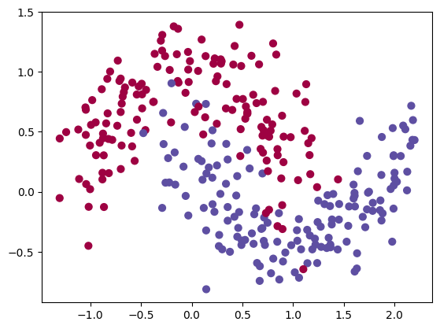
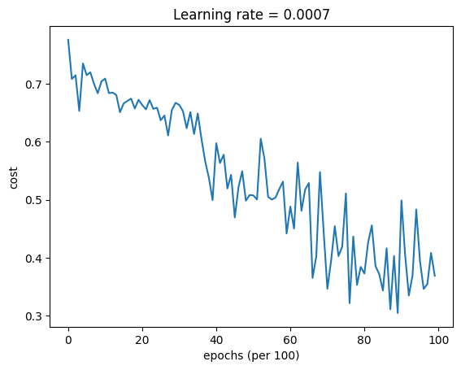
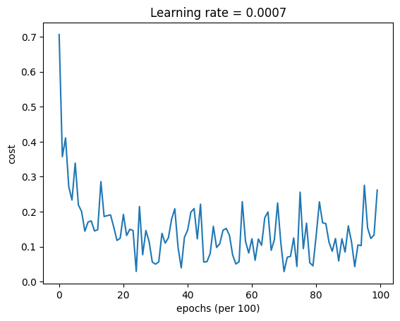

import numpy as np
import matplotlib.pyplot as plt
import h5py
import scipy.io
import sklearn
import sklearn.datasetsNeural Network with Optimization Methods Comparison
This notebook demonstrates the implementation of a three-layer neural network and compares the performance of different optimization methods: Gradient Descent (GD), Momentum, and Adam. The neural network is trained on a two-moon-shaped dataset using various optimization techniques to find the optimal parameters that minimize the cost function and improve the accuracy of the model.
Dataset
The dataset used in this notebook is generated using the make_moons() function from the sklearn.datasets module. The dataset consists of two classes that form two moon shapes. It is a non-linearly separable dataset, making it a suitable scenario for testing different optimization methods for training a neural network.
Activation Functions
The neural network uses two activation functions:
- ReLU (Rectified Linear Unit): The ReLU activation function is used in the hidden layers of the neural network. It allows the model to handle non-linearities efficiently and avoids the vanishing gradient problem, which can occur with sigmoid activation.
- Sigmoid: The sigmoid activation function is used in the output layer to compute the final probability of the binary classification task. It maps the input to the range (0, 1), representing the probability of the input belonging to class 1.
Neural Network Architecture
The neural network architecture is defined as a three-layer model with the following layer dimensions: [input size, 5, 2, 1]. The input size corresponds to the features of the dataset, and the output size is set to 1 for binary classification.
Optimization Methods
1. Gradient Descent (GD)
Gradient Descent is a first-order optimization algorithm that updates the model’s parameters in the opposite direction of the gradient of the cost function. The magnitude of the update is controlled by the learning rate. While GD is a simple and intuitive optimization method, it may suffer from slow convergence, especially for large datasets or in cases where the cost function has high curvatures.
2. Momentum
Momentum is an extension of GD that introduces a moving average of the gradients to accelerate convergence. It accumulates the past gradients’ information to continue moving in the same direction even when the gradients change direction frequently. This helps in faster convergence and reduces oscillations in the cost function. The momentum hyperparameter controls the influence of the past gradients.
3. Adam (Adaptive Moment Estimation)
Adam is a popular optimization algorithm that combines the ideas of both Momentum and RMSprop. It uses moving averages of the past gradients and squared gradients to adapt the learning rate for each parameter. The algorithm automatically adjusts the learning rate based on the history of the gradients and their magnitudes. This adaptive learning rate makes Adam robust and efficient in practice, requiring minimal hyperparameter tuning.
Training and Evaluation
The neural network is trained using each of the three optimization methods. For each optimization method, the model’s parameters are updated iteratively over a specified number of epochs using mini-batch gradient descent. At the end of each epoch, the cost function is computed and printed to monitor the training progress. The final trained model’s accuracy on the training data is also calculated and displayed.
Conclusion
The notebook provides an insight into the effectiveness of different optimization methods in training neural networks. By comparing the performance of GD, Momentum, and Adam, we can gain a better understanding of how these algorithms handle the optimization process and improve the neural network’s convergence and accuracy on non-linear datasets like the two-moon-shaped dataset used here.
Sure, let’s delve into the details and theory of each optimization method along with their advantages and disadvantages.
1. Gradient Descent (GD)
Theory: Gradient Descent is a first-order optimization algorithm used to minimize the cost function of a neural network. It works by iteratively updating the model’s parameters in the opposite direction of the gradient of the cost function with respect to those parameters. The gradient points in the direction of steepest ascent, so taking the opposite direction allows the algorithm to move towards the minimum of the cost function.
Algorithm: 1. Initialize the model’s parameters randomly. 2. Compute the gradient of the cost function with respect to each parameter. 3. Update each parameter using the formula: parameter = parameter - learning_rate * gradient, where the learning_rate controls the size of the update step.
Advantages: - Simple and easy to implement. - Can be applied to large datasets since it processes one data point at a time. - Can handle non-convex cost functions.
Disadvantages: - Convergence can be slow, especially for large datasets or complex cost functions. - Sensitive to the learning rate choice; a large learning rate may lead to overshooting the minimum, while a small learning rate may result in slow convergence.
2. Momentum
Theory: Momentum is an extension of GD that aims to accelerate the convergence of the optimization process. It introduces a moving average of the past gradients to continue moving in the same direction even when the gradients change direction frequently. This helps to overcome oscillations in the cost function and speeds up convergence.
Algorithm: 1. Initialize the model’s parameters and the velocity (initialized as zeros) for each parameter. 2. Compute the gradient of the cost function with respect to each parameter. 3. Update each parameter using the formula: velocity = beta * velocity + (1 - beta) * gradient parameter = parameter - learning_rate * velocity where beta is the momentum hyperparameter.
Advantages: - Accelerates convergence, especially in areas with high curvature or noisy gradients. - Reduces oscillations and overshooting, leading to more stable updates.
Disadvantages: - Momentum may accumulate too much velocity in flat regions, making it harder to escape local minima. - May overshoot and oscillate when the learning rate is too large.
3. Adam (Adaptive Moment Estimation)
Theory: Adam is an adaptive learning rate optimization algorithm that combines the ideas of both Momentum and RMSprop. It uses moving averages of the past gradients and squared gradients to adapt the learning rate for each parameter. The algorithm automatically adjusts the learning rate based on the history of the gradients and their magnitudes.
Algorithm: 1. Initialize the model’s parameters and the first and second moment estimates (initialized as zeros) for each parameter. 2. Compute the gradient of the cost function with respect to each parameter. 3. Update each parameter using the formula: first_moment = beta1 * first_moment + (1 - beta1) * gradient second_moment = beta2 * second_moment + (1 - beta2) * gradient^2 first_moment_corrected = first_moment / (1 - beta1^t) second_moment_corrected = second_moment / (1 - beta2^t) parameter = parameter - learning_rate * first_moment_corrected / sqrt(second_moment_corrected + epsilon) where beta1 and beta2 are the moment hyperparameters, and epsilon is a small constant to prevent division by zero.
Advantages: - Adaptive learning rate for each parameter, reducing the need for extensive learning rate tuning. - Efficient and robust in practice, suitable for a wide range of neural network architectures and cost functions. - Fast convergence and good generalization on various datasets.
Disadvantages: - Adam may exhibit slow convergence on certain non-stationary objectives or saddle points. - Requires more memory to store the additional moving average parameters.
Conclusion
Each optimization method has its strengths and weaknesses, and the choice of the optimization algorithm may depend on the specific problem, dataset, and neural network architecture. While Gradient Descent is a simple baseline algorithm, Momentum and Adam often offer faster convergence and more stable updates in practice. However, Adam may require more memory due to the additional moving average parameters.
It is recommended to experiment with different optimization methods and hyperparameter values to find the optimal combination that yields the best convergence and accuracy for a given neural network task. Additionally, other optimization techniques, such as Adagrad, RMSprop, and Nesterov Accelerated Gradient (NAG), are also widely used in practice and may be worth exploring for specific scenarios.
#creat L-layer neural net with different optimizations def sigmoid (x) :
s = 1/(1+np.exp(-x))
return sdef relu(x):
s = np.maximum(0,x)
return s
def load_params_and_grads(seed=1):
np.random.seed(seed)
W1 = np.random.randn(2,3)
b1 = np.random.randn(2,1)
W2 = np.random.randn(3,3)
b2 = np.random.randn(3,1)
dW1 = np.random.randn(2,3)
db1 = np.random.randn(2,1)
dW2 = np.random.randn(3,3)
db2 = np.random.randn(3,1)
return W1, b1, W2, b2, dW1, db1, dW2, db2def initialize_parameters(layer_dims) :
np.random.seed(3)
parameters = {}
L = len (layer_dims)
for i in range (1 , L) :
parameters['W' + str (i)] = np.random.rand ( layer_dims[i] ,layer_dims[i-1]) * np.sqrt (2/layer_dims[i-1])
parameters['b' + str(i)] = np.zeros(shape=(layer_dims[i] ,1 ))
return parameters def compute_cost (a3 , y) :
m = max (np.shape(y))
cost = 1./m * np.sum(np.multiply (-np.log(a3),y) + np.multiply(-np.log(1 - a3), 1 - y))
return cost def forward_propagation(X , parameters) :
# retrieve parameters
W1 = parameters["W1"]
b1 = parameters["b1"]
W2 = parameters["W2"]
b2 = parameters["b2"]
W3 = parameters["W3"]
b3 = parameters["b3"]
# LINEAR -> RELU -> LINEAR -> RELU -> LINEAR -> SIGMOID
z1 = np.dot(W1, X) + b1
a1 = relu(z1)
z2 = np.dot(W2, a1) + b2
a2 = relu(z2)
z3 = np.dot(W3, a2) + b3
a3 = sigmoid(z3)
cache = (z1, a1, W1, b1, z2, a2, W2, b2, z3, a3, W3, b3)
return a3, cache def backward_propagation(X, Y, cache):
m = X.shape[1]
(z1, a1, W1, b1, z2, a2, W2, b2, z3, a3, W3, b3) = cache
dz3 = 1./m * (a3 - Y)
dW3 = np.dot(dz3, a2.T)
db3 = np.sum(dz3, axis=1, keepdims = True)
da2 = np.dot(W3.T, dz3)
dz2 = np.multiply(da2, np.int64(a2 > 0))
dW2 = np.dot(dz2, a1.T)
db2 = np.sum(dz2, axis=1, keepdims = True)
da1 = np.dot(W2.T, dz2)
dz1 = np.multiply(da1, np.int64(a1 > 0))
dW1 = np.dot(dz1, X.T)
db1 = np.sum(dz1, axis=1, keepdims = True)
gradients = {"dz3": dz3, "dW3": dW3, "db3": db3,
"da2": da2, "dz2": dz2, "dW2": dW2, "db2": db2,
"da1": da1, "dz1": dz1, "dW1": dW1, "db1": db1}
return gradientsdef predict(X, y, parameters):
m = X.shape[1]
p = np.zeros((1,m))
# Forward propagation
a3, caches = forward_propagation(X, parameters)
# convert probas to 0/1 predictions
for i in range(0, a3.shape[1]):
if a3[0,i] > 0.5:
p[0,i] = 1
else:
p[0,i] = 0
print("Accuracy: " + str(np.mean((p[0,:] == y[0,:]))))
return pdef predict_dec(parameters, X):
"""
Used for plotting decision boundary.
Arguments:
parameters -- python dictionary containing your parameters
X -- input data of size (m, K)
Returns
predictions -- vector of predictions of our model (red: 0 / blue: 1)
"""
# Predict using forward propagation and a classification threshold of 0.5
a3, cache = forward_propagation(X, parameters)
predictions = (a3 > 0.5)
return predictions
def load_dataset():
np.random.seed(3)
train_X, train_Y = sklearn.datasets.make_moons(n_samples=300, noise=.2) #300 #0.2
# Visualize the data
plt.scatter(train_X[:, 0], train_X[:, 1], c=train_Y, s=40, cmap=plt.cm.Spectral);
train_X = train_X.T
train_Y = train_Y.reshape((1, train_Y.shape[0]))
return train_X, train_Ytrain_X, train_Y = load_dataset()
def update_parameters_with_gd(parameters, grads, learning_rate):
L = len(parameters) // 2 # number of layers in the neural networks
# Update rule for each parameter
for l in range(L):
parameters["W" + str(l + 1)] = parameters["W" + str(l + 1)] - learning_rate * grads["dW" + str(l + 1)]
parameters["b" + str(l + 1)] = parameters["b" + str(l + 1)] - learning_rate * grads["db" + str(l + 1)]
return parametersimport math
def random_mini_batches(X, Y, mini_batch_size = 64, seed = 0):
np.random.seed(seed) # To make your "random" minibatches the same as ours
m = X.shape[1] # number of training examples
mini_batches = []
permutation = list(np.random.permutation(m))
shuffled_X = X[:, permutation]
shuffled_Y = Y[:, permutation].reshape((1,m))
num_complete_minibatches = math.floor(m/mini_batch_size) # number of mini batches of size mini_batch_size in your partitionning
for k in range(0, num_complete_minibatches):
mini_batch_X = shuffled_X[:,k * mini_batch_size:(k + 1) * mini_batch_size]
mini_batch_Y = shuffled_Y[:,k * mini_batch_size:(k + 1) * mini_batch_size]
mini_batch = (mini_batch_X, mini_batch_Y)
mini_batches.append(mini_batch)
# Handling the end case (last mini-batch < mini_batch_size)
if m % mini_batch_size != 0:
end = m - mini_batch_size * math.floor(m / mini_batch_size)
mini_batch_X = shuffled_X[:,num_complete_minibatches * mini_batch_size:]
mini_batch_Y = shuffled_Y[:,num_complete_minibatches * mini_batch_size:]
mini_batch = (mini_batch_X, mini_batch_Y)
mini_batches.append(mini_batch)
return mini_batchesmini_batches = random_mini_batches(train_X, train_Y, mini_batch_size = 128 )
print ("shape of the X_train is " , np.shape (train_X))
print("shape of the 1st mini_batch_X: " + str(mini_batches[0][0].shape))
print("shape of the 2nd mini_batch_X: " + str(mini_batches[1][0].shape))
print("shape of the 3rd mini_batch_X: " + str(mini_batches[2][0].shape))
print("shape of the 1st mini_batch_Y: " + str(mini_batches[0][1].shape))
print("shape of the 2nd mini_batch_Y: " + str(mini_batches[1][1].shape))
print("shape of the 3rd mini_batch_Y: " + str(mini_batches[2][1].shape))
print("mini batch sanity check: " + str(mini_batches[0][0][0][0:3]))shape of the X_train is (2, 300)
shape of the 1st mini_batch_X: (2, 128)
shape of the 2nd mini_batch_X: (2, 128)
shape of the 3rd mini_batch_X: (2, 44)
shape of the 1st mini_batch_Y: (1, 128)
shape of the 2nd mini_batch_Y: (1, 128)
shape of the 3rd mini_batch_Y: (1, 44)
mini batch sanity check: [-0.14656235 0.22452308 1.38239247]Momentum
def initialize_velocity(parameters):
L = len(parameters) // 2 # number of layers in the neural networks
v = {}
# Initialize velocity
for l in range(L):
### START CODE HERE ### (approx. 2 lines)
v["dW" + str(l + 1)] = np.zeros_like(parameters["W" + str(l+1)])
v["db" + str(l + 1)] = np.zeros_like(parameters["b" + str(l+1)])
### END CODE HERE ###
return v
def update_parameters_with_momentum(parameters, grads, v, beta, learning_rate) :
L = len(parameters) // 2 # number of layers in the neural networks
# Momentum update for each parameter
for l in range(L):
# compute velocities
v["dW" + str(l + 1)] = beta * v["dW" + str(l + 1)] + (1 - beta) * grads['dW' + str(l + 1)]
v["db" + str(l + 1)] = beta * v["db" + str(l + 1)] + (1 - beta) * grads['db' + str(l + 1)]
# update parameters
parameters["W" + str(l + 1)] = parameters["W" + str(l + 1)] - learning_rate * v["dW" + str(l + 1)]
parameters["b" + str(l + 1)] = parameters["b" + str(l + 1)] - learning_rate * v["db" + str(l + 1)]
return parameters, v# ADAM Optimizer
def initialize_adam(parameters) :
"""
Initializes v and s as two python dictionaries with:
- keys: "dW1", "db1", ..., "dWL", "dbL"
- values: numpy arrays of zeros of the same shape as the corresponding gradients/parameters.
Arguments:
parameters -- python dictionary containing your parameters.
parameters["W" + str(l)] = Wl
parameters["b" + str(l)] = bl
Returns:
v -- python dictionary that will contain the exponentially weighted average of the gradient.
v["dW" + str(l)] = ...
v["db" + str(l)] = ...
s -- python dictionary that will contain the exponentially weighted average of the squared gradient.
s["dW" + str(l)] = ...
s["db" + str(l)] = ...
"""
L = len(parameters) // 2 # number of layers in the neural networks
v = {}
s = {}
# Initialize v, s. Input: "parameters". Outputs: "v, s".
for l in range(L):
### START CODE HERE ### (approx. 4 lines)
v["dW" + str(l + 1)] = np.zeros_like(parameters["W" + str(l + 1)])
v["db" + str(l + 1)] = np.zeros_like(parameters["b" + str(l + 1)])
s["dW" + str(l+1)] = np.zeros_like(parameters["W" + str(l + 1)])
s["db" + str(l+1)] = np.zeros_like(parameters["b" + str(l + 1)])
### END CODE HERE ###
return v, sdef update_parameters_with_adam(parameters, grads, v, s, t, learning_rate=0.01,
beta1=0.9, beta2=0.999, epsilon=1e-8):
L = len(parameters) // 2 # number of layers in the neural networks
v_corrected = {} # Initializing first moment estimate, python dictionary
s_corrected = {} # Initializing second moment estimate, python dictionary
# Perform Adam update on all parameters
for l in range(L):
# Moving average of the gradients. Inputs: "v, grads, beta1". Output: "v".
v["dW" + str(l + 1)] = beta1 * v["dW" + str(l + 1)] + (1 - beta1) * grads['dW' + str(l + 1)]
v["db" + str(l + 1)] = beta1 * v["db" + str(l + 1)] + (1 - beta1) * grads['db' + str(l + 1)]
# Compute bias-corrected first moment estimate. Inputs: "v, beta1, t". Output: "v_corrected".
v_corrected["dW" + str(l + 1)] = v["dW" + str(l + 1)] / (1 - np.power(beta1, t))
v_corrected["db" + str(l + 1)] = v["db" + str(l + 1)] / (1 - np.power(beta1, t))
# Moving average of the squared gradients. Inputs: "s, grads, beta2". Output: "s".
s["dW" + str(l + 1)] = beta2 * s["dW" + str(l + 1)] + (1 - beta2) * np.power(grads['dW' + str(l + 1)], 2)
s["db" + str(l + 1)] = beta2 * s["db" + str(l + 1)] + (1 - beta2) * np.power(grads['db' + str(l + 1)], 2)
# Compute bias-corrected second raw moment estimate. Inputs: "s, beta2, t". Output: "s_corrected".
s_corrected["dW" + str(l + 1)] = s["dW" + str(l + 1)] / (1 - np.power(beta2, t))
s_corrected["db" + str(l + 1)] = s["db" + str(l + 1)] / (1 - np.power(beta2, t))
# Update parameters. Inputs: "parameters, learning_rate, v_corrected, s_corrected, epsilon". Output: "parameters".
parameters["W" + str(l + 1)] = parameters["W" + str(l + 1)] - learning_rate * v_corrected["dW" + str(l + 1)] / np.sqrt(s["dW" + str(l + 1)] + epsilon)
parameters["b" + str(l + 1)] = parameters["b" + str(l + 1)] - learning_rate * v_corrected["db" + str(l + 1)] / np.sqrt(s["db" + str(l + 1)] + epsilon)
return parameters, v, sdef model(X, Y, layers_dims, optimizer, learning_rate=0.0007, mini_batch_size=64, beta=0.9,
beta1=0.9, beta2=0.999, epsilon=1e-8, num_epochs=10000, print_cost=True):
L = len(layers_dims) # number of layers in the neural networks
costs = [] # to keep track of the cost
t = 0 # initializing the counter required for Adam update
seed = 10 # For grading purposes, so that your "random" minibatches are the same as ours
# Initialize parameters
parameters = initialize_parameters(layers_dims)
# Initialize the optimizer
if optimizer == "gd":
pass # no initialization required for gradient descent
elif optimizer == "momentum":
v = initialize_velocity(parameters)
elif optimizer == "adam":
v, s = initialize_adam(parameters)
# Optimization loop
for i in range(num_epochs):
# Define the random minibatches. We increment the seed to reshuffle differently the dataset after each epoch
seed = seed + 1
minibatches = random_mini_batches(X, Y, mini_batch_size, seed)
for minibatch in minibatches:
# Select a minibatch
(minibatch_X, minibatch_Y) = minibatch
# Forward propagation
a3, caches = forward_propagation(minibatch_X, parameters)
# Compute cost
cost = compute_cost(a3, minibatch_Y)
# Backward propagation
grads = backward_propagation(minibatch_X, minibatch_Y, caches)
# Update parameters
if optimizer == "gd":
parameters = update_parameters_with_gd(parameters, grads, learning_rate)
elif optimizer == "momentum":
parameters, v = update_parameters_with_momentum(parameters, grads, v, beta, learning_rate)
elif optimizer == "adam":
t = t + 1 # Adam counter
parameters, v, s = update_parameters_with_adam(parameters, grads, v, s,
t, learning_rate, beta1, beta2, epsilon)
# Print the cost every 1000 epoch
if print_cost and i % 1000 == 0:
print("Cost after epoch %i: %f" % (i, cost))
if print_cost and i % 100 == 0:
costs.append(cost)
# plot the cost
plt.plot(costs)
plt.ylabel('cost')
plt.xlabel('epochs (per 100)')
plt.title("Learning rate = " + str(learning_rate))
plt.show()
return parameters# train 3-layer model
layers_dims = [train_X.shape[0], 5, 2, 1]
parameters = model(train_X, train_Y, layers_dims, optimizer="gd")
# Predict
predictions = predict(train_X, train_Y, parameters)
Cost after epoch 0: 0.776085
Cost after epoch 1000: 0.709262
Cost after epoch 2000: 0.663615
Cost after epoch 3000: 0.663728
Cost after epoch 4000: 0.597440
Cost after epoch 5000: 0.507172
Cost after epoch 6000: 0.487885
Cost after epoch 7000: 0.346078
Cost after epoch 8000: 0.372416
Cost after epoch 9000: 0.498869Accuracy: 0.85
# train 3-layer model
layers_dims = [train_X.shape[0], 5, 2, 1]
parameters = model(train_X, train_Y, layers_dims, beta=0.9, optimizer="momentum")
# Predict
predictions = predict(train_X, train_Y, parameters)
Cost after epoch 0: 0.776325
Cost after epoch 1000: 0.709252
Cost after epoch 2000: 0.663705
Cost after epoch 3000: 0.663868
Cost after epoch 4000: 0.597699
Cost after epoch 5000: 0.507593
Cost after epoch 6000: 0.488211
Cost after epoch 7000: 0.346261
Cost after epoch 8000: 0.372549
Cost after epoch 9000: 0.498889
Accuracy: 0.85# train 3-layer model
layers_dims = [train_X.shape[0], 5, 2, 1]
parameters = model(train_X, train_Y, layers_dims, optimizer="adam")
# Predict
predictions = predict(train_X, train_Y, parameters)
Cost after epoch 0: 0.706337
Cost after epoch 1000: 0.173407
Cost after epoch 2000: 0.191965
Cost after epoch 3000: 0.049790
Cost after epoch 4000: 0.147109
Cost after epoch 5000: 0.108286
Cost after epoch 6000: 0.122491
Cost after epoch 7000: 0.028581
Cost after epoch 8000: 0.131736
Cost after epoch 9000: 0.159093
Accuracy: 0.9433333333333334